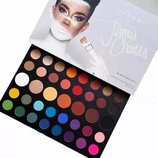

Mi top 5 productos favoritos |
|
✨ Las brochas KLAAR ✨Si todavia no probaron las brochas de KLAAR, ¡están perdiéndose de algo increíble! Este set de 20 brochas es cruelty-free, lo usan los profesionales, y además son hermosas. Vienen con todas las formas y tamaños que necesitás para crear desde un maquillaje natural hasta uno súper glam. Se sienten súper suaves en la piel y aplican los productos de manera uniforme. ¡No hay excusas para no tenerlas! |
|
|  | üé® Paleta de sombras Morphe x James CharlesEsta paleta es simplemente ic√≥nica. ¬øQuer√©s un look sutil para el d√≠a? ¬øUn maquillaje dram√°tico para la noche? ¬øAlgo art√≠stico con colores vibrantes? ¬°Lo tiene todo! La pigmentaci√≥n es una locura, se difuminan como un sue√±o y el packaging es s√∫per resistente. Si hay una paleta que puede con cualquier look, es esta. |
üëÅ M√°scara de pesta√±as Sky High de MaybellineNo exagero cuando digo que esta m√°scara es una de las mejores del mercado. Deja las pesta√±as s√∫per largas, definidas y con un volumen incre√≠ble, sin hacer grumos. Adem√°s, dura todo el d√≠a sin correrse. ¬°Pesta√±as de impacto en segundos! |
|
 |
üíã Lifter Gloss de MaybellineEste gloss es simplemente perfecto. Hidrata, da volumen, y viene en tonos hermosos para cualquier ocasi√≥n. Es tendencia total, deja un brillo espectacular sin ser pegajoso, y lo mejor de todo: es accesible. Lo llevo siempre en la cartera porque s√© que me va a salvar en cualquier momento. |
üåû Natural Bronzer de RimmelSi te gusta ese efecto de piel bronceada y radiante, este bronzer es un infaltable. Tiene una pigmentaci√≥n incre√≠ble, se difumina s√∫per bien y deja un acabado natural, sin parches. |
|